Preface
Note that the correct mode is Tracking Mode in Clip View. In Graph and Dopesheet View there is no sidebar.
Note also that most panels just shows in tracking mode, and not in masking mode.
Track Tab - Track Panel
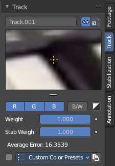
Marker settings for the currently selected marker.
Edit Box
Read and edit the name of the currently selected marker.
| Entry | What it does |
|---|---|
| Enable | Enable the currently selected marker. |
| Lock | Lock the currently selected marker. |
Track Scope
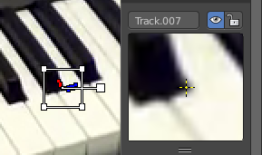
This is a preview image and fine tune window for the currently selected marker. The fade cross stays always in the center, but you can move the image with the left mouse. This automatically records the changed position, and inserts a keyframe at the current position if necessary.
You can pull it vertically bigger by pulling at the handler below the image. And horizontally bigger by pulling out the properties sidebar.
If an anchor is used (the position in the image which is tracking is different from the position which is used for parenting), a preview widget will display the area around the anchor position.
Color Settings
R, G, B
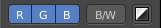
Use red, green and blue color in the preview image.
| Entry | What it does |
|---|---|
| B/W | Use a greyscale preview image. |
| Alpha | Use existing alpha channel for preview image. |
| Entry | What it does |
|---|---|
| Weight | The influence of this track to the final solution. Altering the weights of problem tracking markers can correct or greatly reduce undesirable jumps. This parameter can be animated. |
| Stab Weight | Stabilization weight. The influence of this track on 2D stabilization. |
| Average Error | The average error of this marker. |
Custom Color
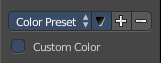
Give the markers different colors. This also affects the list of markers in Dope sheet view.
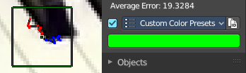
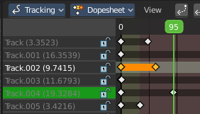
Color Preset
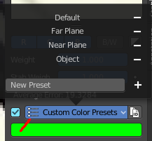
A dropdown box to choose between some predefined colors.
Copy Color
Copy the color of the currently chosen preset.
Color
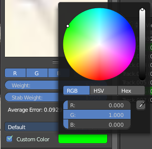
When you tick custom color then a color field will appear below. It displays the current custom color, and allows you to change the color by clicking at it. A color picker will appear.
Track tab - Objects Panel
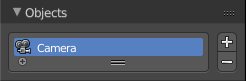
This content shows in Tracking Mode and Masking mode.
A list of the tracked objects. Usually the camera. But you can track every other object too.
Add, Remove Tracking Object
The plus and minus buttons at the right allows you to add new objects to the list, or to remove existing objects from the list.
Search Field
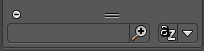
The list field contains a hidden search field. Click at the little + button down left to reveal it.
Track tab - Plane Track Panel
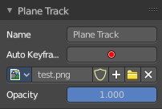
This content is just active and visible when you have a Plane track in your footage.
See also in the Tool shelf in the Solve tab in the Plane Track panel.
| Entry | What it does |
|---|---|
| Name | The name of the Plane track. |
| Auto Keyframe | Use Auto Keyframe when moving plane track corners. |
Image prop
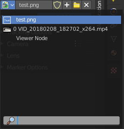
| Entry | What it does |
|---|---|
| Image browser | See and load images or movies that you want to display inside of the Plane track. Note that this image needs to exist already so that it gets displayed in the list. As a image node for example. |
| Edit Box | The name of the current active image or movie. Click at it to change the name. |
Fake User
Wit this button you assign a fake user to this selected mask. Masks gets created with a fake user already. Means when you save the scene and reopen it, then this mask will still be there.
Data, like images, that is not longer linked to anything else gets removed when you save and reload a scene. Bforartists has the concept of fake users to go around this behaviour. An image with a fake user is in fact linked to something. And so it is not lost when you save and reload the scene.
| Entry | What it does |
|---|---|
| New Image | Calls a file browser to choose a image or movie. |
| Remove | Removes the current active image or movie. It is still in the Image browser though. To delete it completely you can use the Purge command in the File menu in the Cleanup submenu. See also Fake User. |
Opacity
The opacity of the image or movie.
Track tab - Tracking Settings Panel
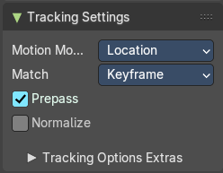
This content is visible when you have at least one of the markers selected.
Motion Model
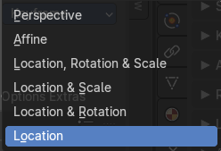
Choose the motion model for the marker.
Match
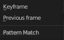
Choose the pattern match method.
| Entry | What it does |
|---|---|
| Prepass | Use a brute-force translation only pre-track before refinement. |
| Normalize | Normalize light intensities while tracking. |
Tracking Options Extras
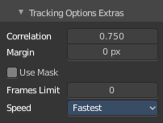
A sub menu that contains some not so often used settings.
| Entry | What it does |
|---|---|
| Correlation | Default minimum value of correlation between matched pattern and reference that is still treated as successful tracking. |
| Margin | Default distance from image boundary at which markers stops tracking. |
| Use Mask | Use a Grease Pencil data block as a mask. |
| Frames Limit | In every tracking cycle the numbers of given frames are tracked. |
Speed
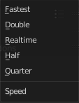
A drop down box to choose the tracking speed. This is just a preview feature. The tracking quality is not affected.
Track tab - Camera Panel
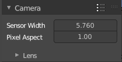
The settings for the camera with which you have recorded the footage movie. Every camera has some specific settings. And this needs to be calculated too to match the footage to the 3D content.
Presets
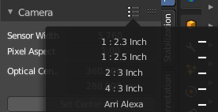
A drop down box to choose between different camera presets. When your camera is not listed then you need to do the settings manually.
Add Camera Preset
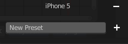
This is at the end of the list. Add a new preset, and give it a name. To remove the preset click at the minus sign besides the preset in the list
| Entry | What it does |
|---|---|
| Sensor Width | The width of the CCD Sensor in your used camera. This value can be found in the camera specifications. |
| Pixel Aspect | The Pixel Aspect ratio of the CCD Sensor in your used camera. This value can be found in the camera specifications. This value can also be guessed. For example, when the footage should be 1920×1080, but the images themselves are 1280×1080, then the pixel aspect is: 1920 / 1280 = 1.5. |
Track tab - Camera Panel - Lens Subpanel
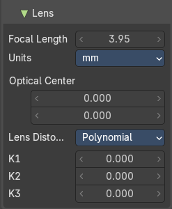
This panel belongs to the Camera panel above. Type in your lens values from the camera with which you have recorded your footage movie.
Focal length
The focal length units with which the movie was shot. You can choose between millimeter and pixel.
Units
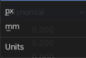
The units to use for the camera focal length.
| Entry | What it does |
|---|---|
| Optical center | The optical center. Usually in the middle of the movie. But some cameras also have an offset here. In most cases it is equal to the image center, but it can be different in some special cases. Check camera/lens specifications in such cases. To set the optical center to the center of image, there is a Enter button below the sliders. |
| Set Center | Center the optical center. |
Lens Distortion
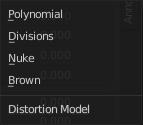
The lens distortion of your camera. You can choose between two distortion models. Polynomial and Divisions.
Basically, just tweak K1 until solving is most accurate for the known focal length (but also take grid and grease pencil into account to prevent “impossible” distortion).
The brown model also provides P1 and P2 values.
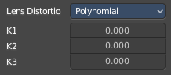
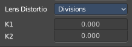
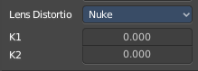
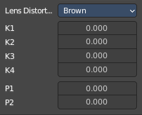
Track tab - Marker Options Panel
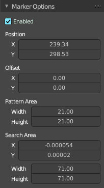
The Marker panel contains the settings for the selected marker(s). Here you can also enable or disable the marker.
| Entry | What it does |
|---|---|
| Enabled | Enable the selected marker(s). |
| Position | The position of the selected marker(s) in pixel. Zero is down left. |
Offset
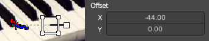
You can give the marker handler an offset. So that it gets displayed besides the marker.
Pattern Area
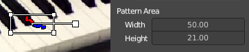
The handler size.
Search Area
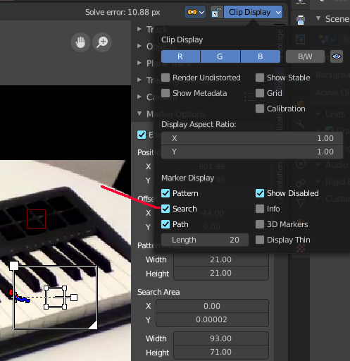
The size and position of the search area for this marker for tracking.
The search area can be turned on in the Clip Display options in the header up right.